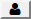
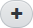

|
Редактирование личного портфолио
|

определяются пользователи, которые могут просматривать ваш портфолио.
в соответствующей секции. Введите название документа или ссылку, а также описание, и нажмите кнопку Сохранить. Документ на экране Личный портфолио будет показываться именно под именем, которое было введено, а ссылка будет отображать свой адрес.